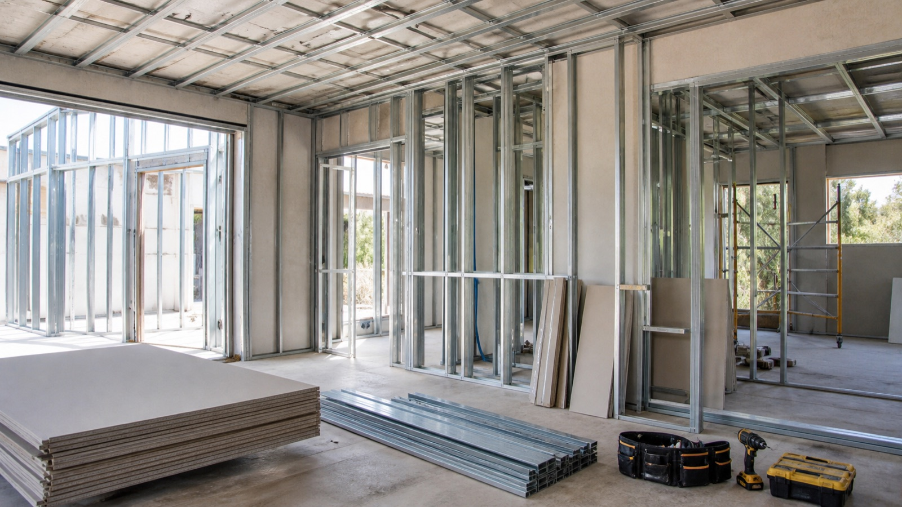
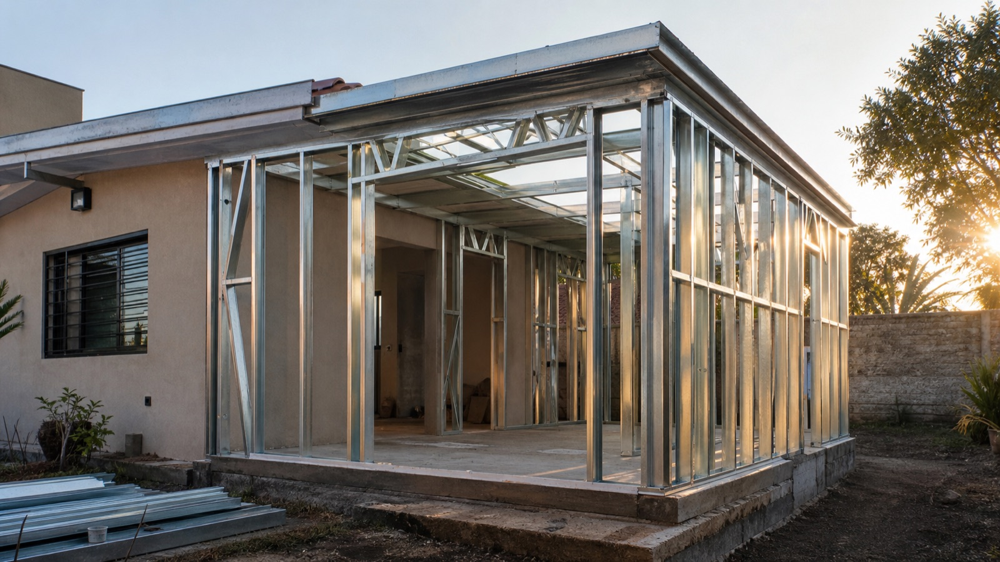
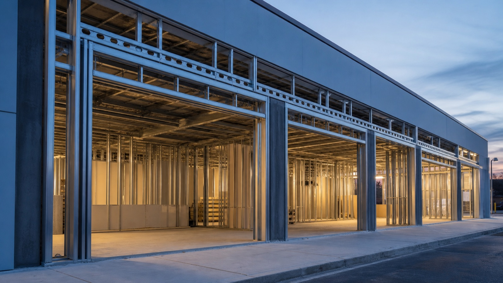
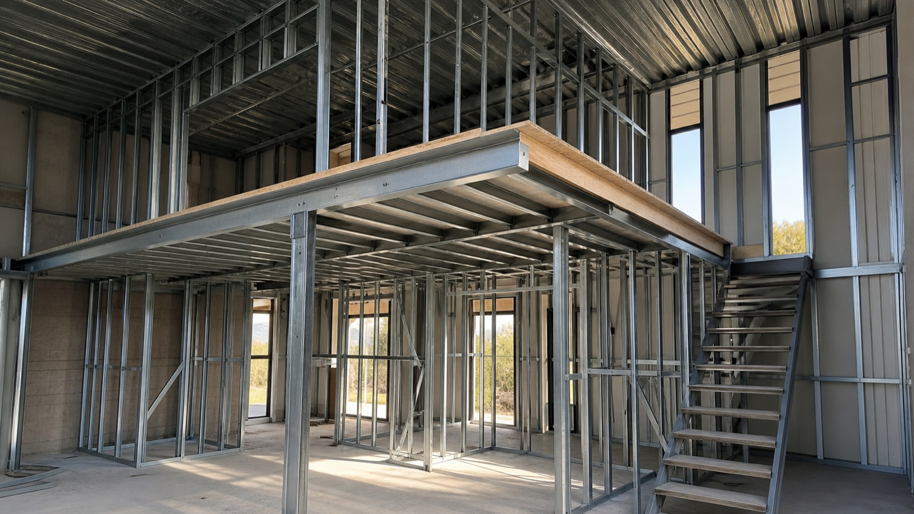
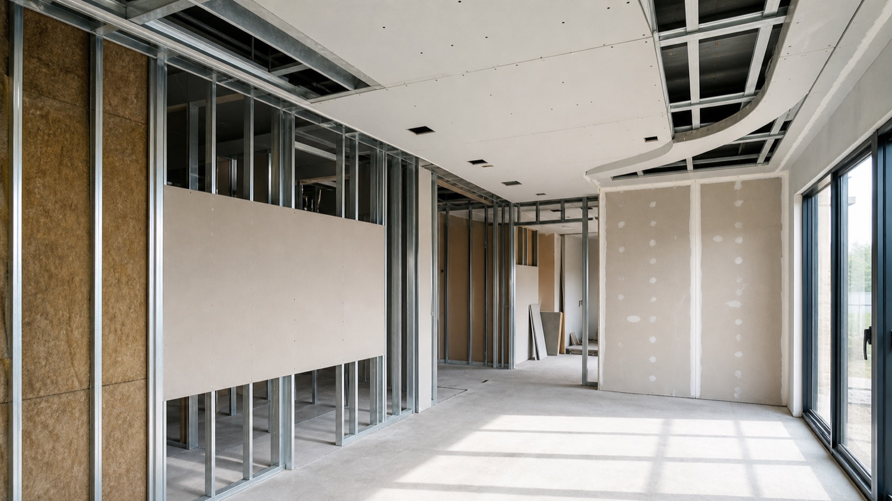

Casas Steel Framing
Viviendas completas con estructura liviana y alcance definido por proyecto.
ConsultarViviendas, ampliaciones, locales, entrepisos y obras en seco con estructura liviana, planificación técnica y soluciones a medida.
Alcance según proyecto
Orden y planificación
Consultas locales
Sistema
Es un sistema de construcción en seco con estructura de perfiles de acero galvanizado. Sobre esa estructura se resuelven placas, aislaciones y terminaciones según el proyecto.
Puede ser una alternativa para viviendas, ampliaciones, locales y obras a medida cuando se busca una ejecución planificada y más limpia que una obra húmeda tradicional.
Consultar por proyectoObras y sistemas
Imágenes preparadas para mostrar el tipo de estructura, orden de obra y soluciones que suelen consultarse para viviendas, ampliaciones, locales, entrepisos y reformas.

Estructura, placas y obra planificada.

Nuevos ambientes y reformas a medida.

Soluciones para comercios y oficinas.

Aprovechamiento técnico del espacio.

Tabiques, cielorrasos y revestimientos.
Servicios
Viviendas completas con estructura liviana y alcance definido por proyecto.
ConsultarNuevos ambientes, segundas plantas y espacios anexos según evaluación técnica.
ConsultarObras comerciales, estudios, oficinas y espacios de atención.
ConsultarTabiques, cielorrasos, revestimientos y soluciones interiores.
ConsultarSoluciones livianas para sumar superficie útil según proyecto.
ConsultarDistribuciones interiores para vivienda, comercio u oficina.
ConsultarCielorrasos en seco y terminaciones interiores planificadas.
ConsultarRevestimientos y terminaciones según nivel buscado.
ConsultarProyecto visual
El Steel Framing es una alternativa moderna para proyectos que necesitan precisión, planificación y una ejecución más ordenada.
Consultar proyectoProceso
Para cotizar mejor, enviá fotos del espacio, medidas aproximadas, localidad y si tenés planos o referencias.
Antes de cotizar
Con fotos, medidas y localidad es más fácil orientar la consulta inicial.
Enviar consultaSEO local
Cercanas: Banfield, Temperley, Turdera, Adrogué
Ver landing local →Cercanas: Lomas de Zamora, Temperley, Remedios de Escalada
Ver landing local →Cercanas: Lomas de Zamora, Banfield, Turdera, Adrogué
Ver landing local →Cercanas: José Mármol, Burzaco, Temperley, Rafael Calzada
Ver landing local →Cercanas: Bernal, Ezpeleta, Don Bosco, Wilde
Ver landing local →Cercanas: Avellaneda, Remedios de Escalada, Banfield, Lomas
Ver landing local →Consultas reales del rubro
Cliente en Lomas de Zamora
Consulta por ampliación en Steel Framing para sumar un ambiente a una vivienda existente.
Cliente en Quilmes
Pedido de local comercial con estructura liviana y cerramientos definidos por proyecto.
Cliente en Adrogué
Consulta por construcción en seco, tabiques, cielorrasos y terminaciones interiores.
Cliente en Banfield
Pedido de entrepiso y reforma para aprovechar mejor un espacio existente.
FAQ
Es un sistema de construcción en seco que utiliza una estructura de perfiles de acero galvanizado, placas, aislaciones y terminaciones definidas según cada proyecto.
Sí, se pueden consultar ampliaciones, nuevas plantas, espacios anexos y reformas según el estado de la obra existente.
Sí, se reciben consultas para Zona Sur, Lomas de Zamora, Banfield, Temperley, Adrogué, Quilmes, Lanús, Avellaneda y Burzaco.
Fotos del espacio, medidas aproximadas, localidad, tipo de obra y, si tenés, planos o referencias.
Sí, puede utilizarse para viviendas completas cuando el proyecto técnico y el alcance de obra están definidos.
Puede ser una alternativa para ampliaciones o segundas plantas, sujeto a evaluación de estructura existente y proyecto.
Sí, se pueden consultar locales, oficinas, estudios y espacios comerciales.
Sí, las fotos ayudan a entender el espacio y orientar mejor la consulta inicial.
Sí, si tenés planos, croquis o referencias, sirven para preparar una cotización más clara.
El alcance se define por proyecto: estructura, placas, aislaciones, revestimientos y terminaciones según necesidad.
Contanos qué querés construir, en qué localidad y qué información tenés disponible.